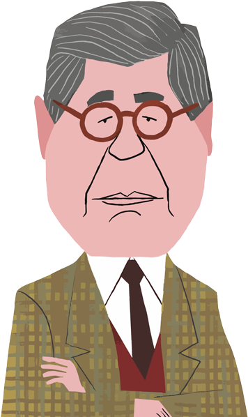

Un mundo para Bryce
A propósito del cumpleaños 87 del escritor peruano Alfredo Bryce Echenique, repasamos siete de sus personajes que perviven en el imaginario peruano a pesar de los años.



A propósito del cumpleaños 87 del escritor peruano Alfredo Bryce Echenique, repasamos siete de sus personajes que perviven en el imaginario peruano a pesar de los años.
un inocente en la barbarie
1970
El protagonista de la primera novela de Bryce Echenique, un niño que es testigo inocente de dinámicas sociales en las que no puede intervenir.
En su condición de niño, el pequeño Julius se siente en la libertad de moverse por espacios que, para sus mayores, no deben ser franqueados. La cercanía que este pequeño miembro de la oligarquía hacia la servidumbre es una muestra de su inocencia; esto lo hace además el protagonista ideal, porque puede moverse con soltura entre ambos mundos. Tal y como Abelardo Oquendo escribió para este Diario en 1971, es “el niño sensible y solitario que va descubriendo una realidad cruel que no comprende pero que aprende con tristeza y pesar. Así, Julius no es sólo el protagonista del libro sino también su instrumento de exploración”.
madre es la que cría
1970
Víctima de un sistema que solo busca perpetuarse, Vilma hizo todo lo que su entorno esperó de ella y aún así la desecharon.
Con el punto de vista que Bryce elige para “Un mundo para Julius”, queda claro que el mundo juzga a Vilma por su apariencia: al pensar en ella los adultos primero destacan su origen andino y, segundo, su atractivo físico. Pero donde los demás solo ven con los ojos, Julius vio con el corazón; encontró en ella a la madre que doña Susan eligió no ser. Por eso mismo duele tanto que, cuando ha sufrido violencia en la casa de sus empleadores, estos la despidan y premien a su agresor, hermano mayor de Julius. Para Vilma, la calle; para Santiago, un partidito de golf. La novela habla sobre el dolor de crecer y el destino de este personaje marca un traumático final de la niñez para el protagonista.
Lorna una vez, lorna siempre
1972
El escritor demuestra una vez más que puede escribir personajes no solo miserables, sino patéticos hasta decir basta.
Sevilla es tan insignificante, tan mínimo en su esencia humana que no se permite fantasear con mujeres. No, eso es pecado; las chicas que intenta ver en la calle las imagina como esposas para el que quizás fue su único amigo y cuya muerte lo marcó para siempre. Empleado de la municipalidad de Lima, entró sin buscarlo a un concurso que terminó ganando y por el cual tendrá que viajar a España, dejando en la ciudad a su anciana y muy católica tía. “Envuelto cómodamente en una gruesa capa de prejuicios y de formas inauténticas de vida, víctima fácil de ‘un criollismo algo amargado’, Sevilla vive en un mundo iluso, incapaz de dirigir su propia existencia”, contó en ese entonces el crítico José Miguel Oviedo.
una pequeña rebelión interna
1981-1985
El alter ego definitivo de un autor que hace ejercicio de una voz propia e inconfundible. Hay demasiados puntos en común entre Alfredo Bryce Echenique y su creación, Martín Romaña.
Ambos son escritores peruanos, los dos vienen de familias de rancio abolengo y se fueron a París en su juventud por una beca; allí trabajaron en esa ciudad como profesores. Pero las diferencias acaban aquí, porque mientras el hombre real, Bryce, cosechó éxito con sus obras, el ficticio, Romaña, fue el escritor que no escribía nada. Cuando por fin tiene las mejores ideas, ya es demasiado tarde. Su saga de altibajos humorísticos no alcanzaba en un solo libro, así que el autor le dio dos: “La vida exagerada de Martín Romaña” (1981) y “El hombre que hablaba de Octavia de Cádiz” (1985).
la única que aguanta al protagonista
1981 - 1985
De haber sido escrita hoy, internet la llamaría una ‘manic pixie dream girl’, que existe solo para desarrollar al protagonista. Bryce trascendió el cliché antes de que exista con un personaje redondo.
Si la novela se llama “El hombre que hablaba de Octavia de Cádiz”, entonces la mujer tiene que ser central. Descrita como un ser increíblemente miope, de piernas “divertidas”, todo lo que sabemos de Petronila Marie Amélie, alias ‘Octavia’, es por el punto de vista del protagonista, Martín Romaña. Amor platónico, pero también físico y prohibido (es menor de edad y su familia de abolengo rechaza la relación), el lector incluso llega a cuestionarse si es real o un invento del deprimido Romaña, quien de no escribir su prometida novela ha llevado a otro nivel la “vida exagerada” que dio nombre al primer libro. A todo efecto, ella tiene influencia en él, y eso es tan real como la ficción permite.
entre la expectativa familiar y el deseo propio
1990
¿Hasta dónde estarías dispuesto a llegar con tal de conseguir un objetivo que ni siquiera es tuyo, sino de tus padres?
En una de las tres novelas breves que componen “Dos señoras conversan”, el personaje Mañuco Cisneros recuerda a la persona que en buena parte forjó su adolescencia. Encontrar la billetera perdida del gringo Pancho Malkovich, ingeniero de la Cerro de Pasco Cooper Corporation, lo puso en lo que entonces creyó que era el camino para cumplir el sueño de sus padres: que estudie en Estados Unidos, lejos del común de los peruanos. Tanto quiso seguir ese camino que incluso dejó plantada a su cita por irse a almorzar con el gringo y su séquito. Años después este encuentro tendrá una resolución entre nostalgia y golpe de realidad.
un testigo de la decadencia
1995
Otro personaje con tintes autobiográficos, que examina su realidad a lo largo de cinco décadas y observa cómo caen los gigantes, o quienes se creían gigantes, eran solo hombres.
Bryce llevó su conocida anécdota del “callejón oscuro” a la literatura. A Manongo Sterne, alumno de un colegio de curas, le hacen eso y termina en la clínica. Pero en lugar de preocupar a su entorno, esta situación hace que todos, desde sus familiares hasta sus maestros y compañeros, culpen a la víctima. Lo tratan de poco hombre, de subhumano. Lo que sigue es una vida marcada por la no pertenencia, así como por el hallazgo del verdadero y único amor, además de mostrar, como si se tratara de un desastre en cámara lenta, el derrumbe de la oligarquía peruana a la que el mismo Bryce perteneció. En “Un mundo para Julius”, Echenique mostró a los ricos en todo su apogeo; en “No me esperen en abril”, les hizo un epitafio.